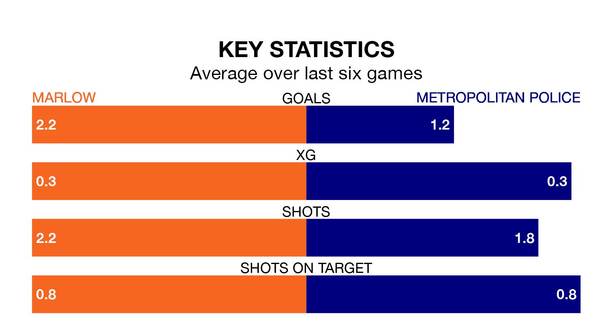

Marlow host Metropolitan Police on Saturday at Alfred Davis Memorial Ground in Isthmian League Division One South Central.
In their last league match, on Tuesday, Marlow drew with Badshot Lea 2-2 away.
Metropolitan Police lost, 1-0 away at Northwood.
With 54 goals in 20 games so far this season, Marlow are the league's joint-highest scorers with 2.7 goals per game. And they are conceding fewer than average, letting in 27 goals at a rate of 1.4 per game.
Metropolitan Police, meanwhile, are below average scorers, with 1.1 goals per game, compared to a league average of 1.7. They have conceded 1.8 goals per game.
The home side are fifth in the table after 20 games, of which they have won 13 and drawn two, earning 41 points.
The visitors are nine places behind Marlow in 14th, with five wins and six draws putting them on 21 points.
Marlow are in mixed form in Isthmian League Division One South Central, with two wins and a draw from their last six games.
With three wins and a draw over that period, Metropolitan Police's form is better – they have taken 10 points from 18, compared to the hosts' seven.
Updated: 10:50, 10/01/24